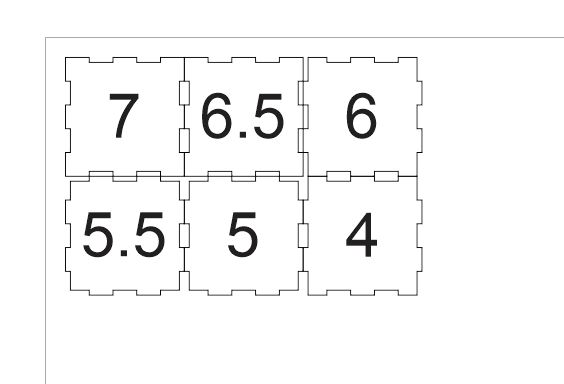
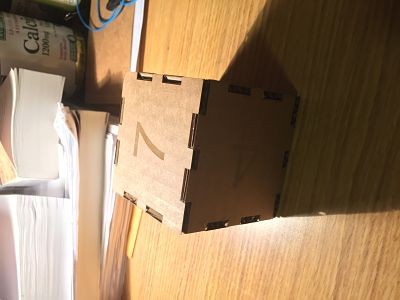
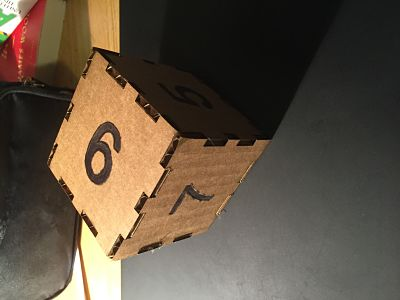
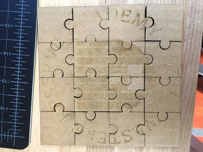
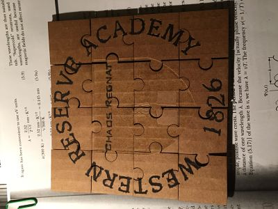

This week we are trying to use Corel Draw and the laser cutter to produce some boxes or puzzles of our own.
The first design that I had was a grading die for teachers, designed to relieve educators of their troubles at grading.
After setting the suitable rastering and vectoring parts, I printed the box plan on the laser printer. After some efforts at gluing the facets together, I get a final result.
From the picture it is not hard to see that although the cutting process was successful, the engraved figures were not that clear and deep. I good solution would probably be to fill the relief with black ink to make them stand out to the eye.
The final result is this.
In addition to the box, I created a puzzle using the puzzle template with our school emblem and some Latin on it.
As you can see, the engravings are recognizable, but the Latin script is not very refined. Thus, I used the marker to outline the letters.
